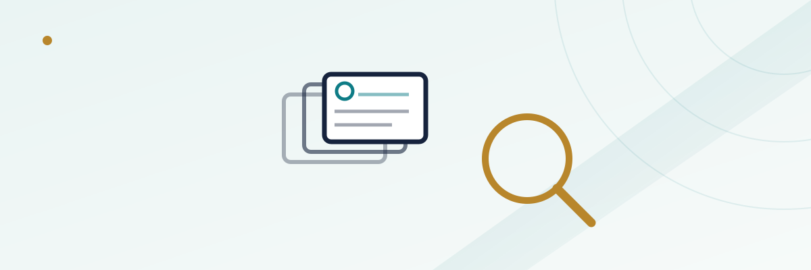

How Online Casinos Screen for Bonus Abuse

Most casino bonus explainers stop at wagering requirements — how many times you have to play through a deposit before you can withdraw. That's only half of how a bonus actually gets protected. On the back end, operators also run account-level reviews designed to catch patterns that look less like a player enjoying a promotion and more like someone systematically extracting value from it. Understanding what those reviews actually look for helps explain why a perfectly legitimate withdrawal sometimes gets held for a few extra days, and why bonus terms are written the way they are in the first place.
In this guide
Why this review process exists
A sign-up bonus or a reload offer is a direct marketing cost to the operator — real money or free spins handed out to acquire or retain a player, recovered only if that player eventually generates enough betting activity to be worth it. Wagering requirements are the first layer of protection, forcing a minimum amount of play before a bonus converts into withdrawable cash. But wagering requirements alone don't stop someone from opening several accounts to collect the same new-player offer repeatedly, or from finding a specific combination of bets that clears the requirement while risking almost nothing. Account review is the second layer, built to catch exactly those two patterns before a withdrawal clears.
Multi-accounting: what it is and how it's caught
Multi-accounting means one person opening more than one account at the same casino, usually to claim a welcome bonus more than once. Operators are required to run identity verification on every new account anyway (see our guide on how account verification affects withdrawals), and that same KYC data doubles as the first line of multi-accounting defense: matching names, dates of birth, and government ID numbers across accounts is a direct catch. Beyond that, operators cross-reference signals a new player wouldn't think to hide — the device and browser fingerprint used to sign up, the IP address and general geolocation pattern, and the payment method or e-wallet used to fund the account. Two "different" accounts sharing a payment card, a household Wi-Fi network, or a device fingerprint is a strong indicator, even if the names and addresses on file don't match exactly.
Shared-address situations complicate this in both directions. Roommates or family members who each have their own legitimate account can occasionally get swept into a review simply because they share a network or a delivery address, which is one reason this kind of flag usually triggers a manual look rather than an automatic account closure.
Bonus hunting and low-variance clearing patterns
"Bonus hunting" describes a player who treats a promotion less like entertainment and more like a math problem to be solved with minimal risk. The classic pattern is betting both sides of a near-even-money game, or spreading wagers across outcomes in a way that's designed to satisfy a wagering requirement's turnover total while keeping the player's own net exposure close to zero. Because most bonus terms explicitly restrict or zero out contribution from low-volatility bets for exactly this reason, the behavior itself — a string of minimum-variance wagers right up to the wagering requirement threshold, then an immediate withdrawal attempt — is a recognizable shape operators watch for independent of any single large flagged bet.
This is different from simply being a cautious player. The distinction operators are drawing isn't "did you bet carefully," it's whether the betting pattern looks structured specifically to extract bonus value while avoiding the risk the promotion was designed to carry.
| Pattern | Usually flagged? | Why |
|---|---|---|
| New account sharing a payment method with an existing account | Yes | Classic multi-accounting signal |
| Betting structured to minimize variance while clearing wagering requirements | Yes | Matches bonus-hunting patterns operators specifically write terms against |
| Playing a wide mix of game types at normal stakes after claiming a bonus | No | Ordinary play; no structured extraction pattern |
| Roommates or family members with separate accounts on shared Wi-Fi | Sometimes, briefly | Shared network can trip a device/IP check even when both accounts are legitimate |
What typically gets flagged vs. what doesn't
The table above covers the most common cases, but the underlying principle is consistent across operators: reviews are built around patterns, not single data points. One shared IP address rarely triggers anything on its own; a shared IP plus a shared payment method plus near-identical account creation timing is a different story. Ordinary variation in how people play — switching between slots and table games, betting bigger on some sessions than others, taking a break mid-wagering-requirement and coming back later — doesn't resemble either multi-accounting or bonus hunting and typically clears without any extra scrutiny.
What an account review actually looks like
In practice, a flagged withdrawal is placed on a temporary hold rather than denied outright. The operator's risk or compliance team checks the account against the specific bonus terms that applied, reviews the betting pattern during the wagering period, and in some cases requests additional documentation — a government ID, a utility bill confirming an address, or a statement from the payment method used — beyond what was collected at signup. If the review confirms legitimate, independent play, the hold is released and the withdrawal proceeds, typically within the operator's standard processing window plus the extra review time. If the review finds a genuine multi-accounting or bonus-hunting pattern, outcomes range from forfeiting the bonus funds and associated winnings to a full account restriction, depending on the severity and the specific terms the player agreed to.
This hold period is a separate step from the routine identity verification every new withdrawal already goes through, which is why a bonus-linked withdrawal can sometimes take noticeably longer than a withdrawal of a player's own deposited funds with no bonus attached.
How a legitimate player avoids a false flag
The practical takeaway for an ordinary player isn't complicated: use one account per household member on a shared connection only when each account's identity details are genuinely distinct and accurate, avoid betting patterns that look like you're trying to satisfy a wagering requirement with as little real risk as possible, and read the specific game-weighting rules in a bonus's terms before assuming every type of bet counts equally toward clearing it (our guide on how contribution rates work covers that part directly). None of this requires behaving unnaturally — it mostly means playing the way you'd play anyway, and understanding that a brief hold on a bonus withdrawal is a normal part of the process rather than a sign something has gone wrong.
Frequently asked questions
Will sharing a Wi-Fi network with a family member get my account flagged?
It can trigger a closer look if it lines up with other signals, like a shared payment method, but a shared network alone with otherwise distinct account details is usually resolved quickly once reviewed.
Is it bonus abuse to just play carefully and avoid big losses?
No. Operators are looking for betting structured specifically to minimize variance while clearing a wagering requirement, not ordinary cautious play. Playing a normal mix of games at reasonable stakes isn't the pattern being screened for.
How long does an account review hold usually last?
It varies by operator, but a hold tied to a bonus review is typically measured in days rather than weeks for an account that clears review, on top of whatever the casino's standard withdrawal processing time already is.
What happens if an account is confirmed to be a duplicate?
Outcomes vary by operator and the specific terms involved, but commonly include forfeiting the bonus and any winnings tied to it, and in more serious or repeated cases, restriction of the accounts involved.
Do operators review every single bonus withdrawal?
No. Most bonus-linked withdrawals clear through automated checks without any manual review. A closer look is typically triggered by a specific pattern or combination of signals, not applied as a blanket policy to every player.